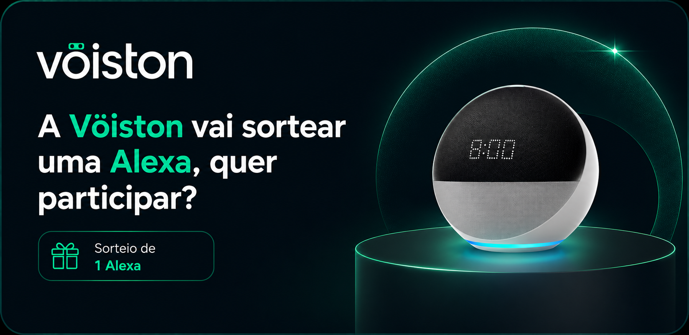
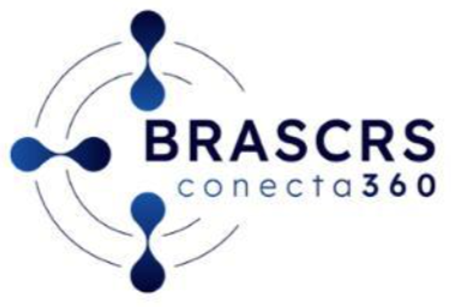

Acesse a versão beta do novo portal da BRASCRS.
Cálculo de lente intraocular gratuíto para associados BRASCRS.

Assistente de laudo Vöiston para associados BRASCRS em breve.

Selecione um exame acima para iniciar a análise.